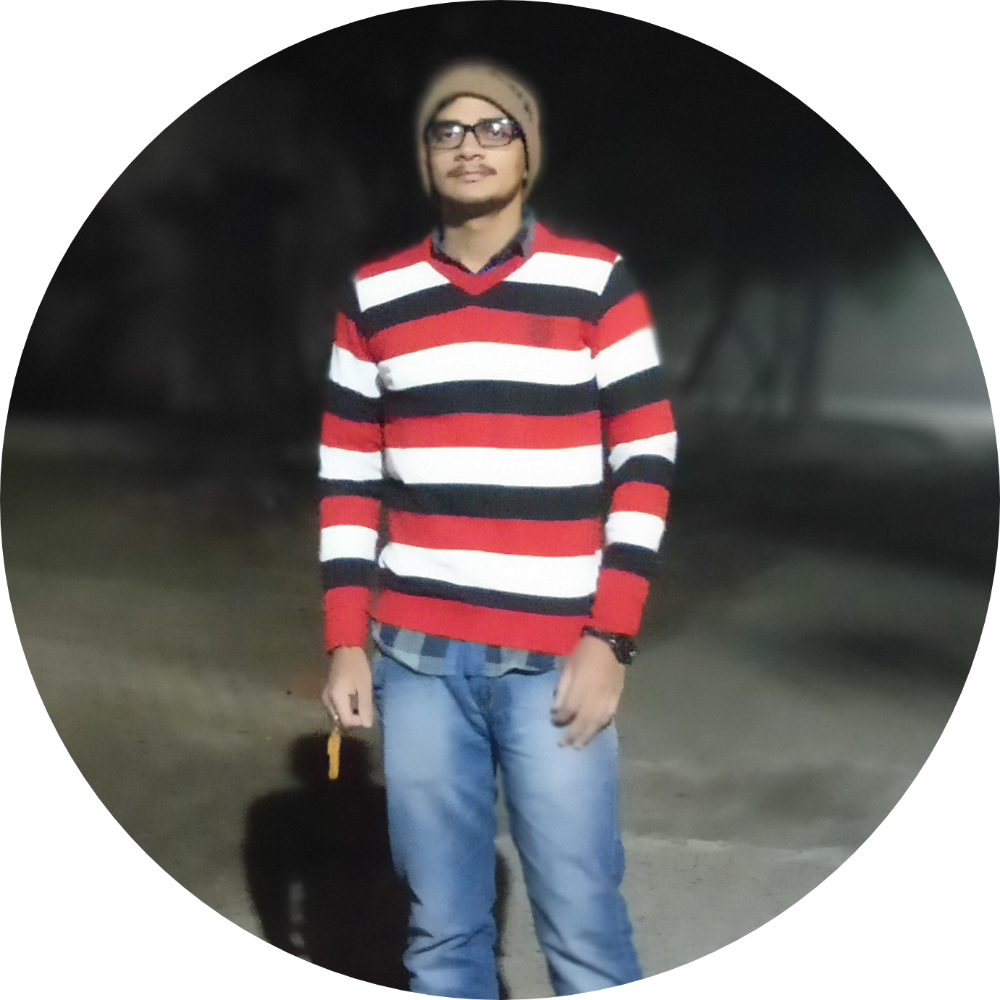

|  |
ASHISH KUMAR YADAVStudent at CCSU MEERUT. I am a computer science student at SCRIET CCSU MEERUT. I ❤ reading books especially in tranquility. I want to be a Data Scientist. I used to be at peak of my happiness when someone smiles or becomes happy 'cause of me. My favourite novel is "A Thousand Splendid Suns" by khaled Hosseini and non-fiction book is "Start with why" by Simon Sinek. |
| Date | Course |
|---|---|
| September-December 2018 | Developing Soft Skils and Personality |
| January-April 2019 | Enhancing soft skills and Personality |
| May-August 2019 | Python Complete Bootcamp by Jose Portilla |
| September-December 2019 | Data Anaytics using Python by NPTEL |
| January-May 2020 | DATA SCIENCE BOOTCAMP by Kiril Ermenko |
|
|